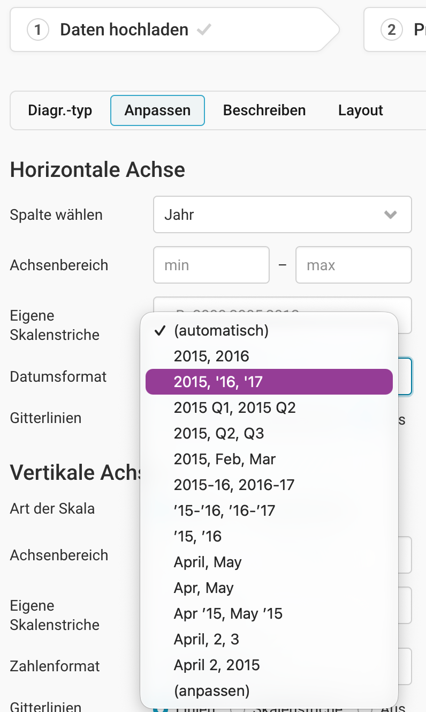
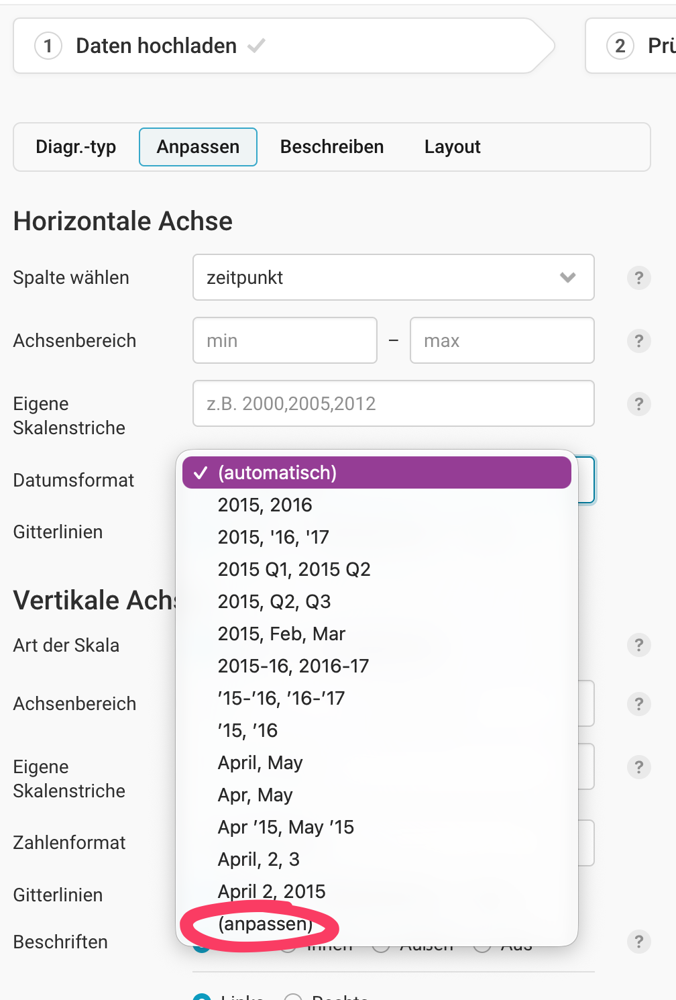

Chart & Chill Vol. 3
Was sind Liniendiaframme?
eine der wichtigsten Grafikarten um Veränderungen über die Zeit darzustellen
Stellen oft kontinuierliche Veränderungen über die Zeit dar
- innerhalb einer Stunde
- eines Tages
- eines Jahres
- einer Dekade
Die Reihenfolge der Datenpunkte von links nach rechts hat eine Bedeutung
- die Verbindung zwischen den Messungen/Datenpunkten suggerieren Daten (die eigentlich nicht existieren)
Häufig Entscheidung zwischen Balkendiagramm oder Liniendiagramm!
Während Balkendiagramme auch für Darstellungen der Veränderung über Zeit verwendet werden können, können Liniendiagramme nicht für Kategorien verwendet werden!
Häufig Zeit
- Minuten
- Stunden
- Tage
- …
Müssen in einem bestimmten Format für Datawrapper vorliegen!!
Numerischer Wert
- Temperatur
- Arbeitslosenquote
- Einkommen
- …
Wann sind Liniendiagramme zu verwenden?
- Wenn eine Entwicklung über Zeit gezeigt werden soll
- Trends, Anstiege, Rückgänge und Wendepunkte werden besonders gut sichtbar.
- Wenn die Reihenfolge der Datenpunkte wichtig ist
- z.B. Montag → Dienstag → Mittwoch oder 2020 → 2021 → 2022.
- Anders als Kategorien wie Wien, Graz und Linz können die Werte nicht beliebig umsortiert werden.
- Wenn zwischen den Messpunkten eine sinnvolle Verbindung besteht
- Beispiel Temperatur: Zwischen einer Messung um 7 Uhr und einer um 8 Uhr existiert die Temperatur weiter.
- Die Linie vermittelt deshalb sinnvoll einen Verlauf zwischen den Messpunkten.
- Der Wert zum Zeitpunkt t hängt statistisch vom Wert bei t−1 ab. Das nennt man bei Zeitreihen etwa Autokorrelation. Das kann vorkommen, ist aber keine Voraussetzung für ein Liniendiagramm. (40 Grad um 16 Uhr sind wahrscheilicher wenn es um 15 Uhr auch schon 39 und nicht 12 Grad hatte…)
- Wenn viele Zeitpunkte dargestellt werden
- z.B. tägliche Aktienkurse über mehrere Jahre oder tägliche Temperaturen.
- Hunderte Balken würden zu einer nahezu geschlossenen Fläche werden; eine Linie zeigt den Verlauf wesentlich klarer.
- Wenn Veränderungen wichtiger sind als einzelne absolute Werte
- Linie → Wie entwickelt sich etwas?
- Balken/Säulen → Wie groß sind die einzelnen Werte?
- Wenn mehrere Entwicklungen miteinander verglichen werden
- z.B. Arbeitslosenquote von Österreich, Deutschland und Italien seit 2000.
- Mehrere Linien lassen Trends und unterschiedliche Entwicklungen gut vergleichen.
Wie müssen die Daten für Datawrapper aussehen?
- 1 Spalte Zeit (ganz links) – eine Zeile pro Zeitpunkt
- 1 Spalte Werte – eine Linie
- Mehrere Linien → mehrere Werte-Spalten, eine pro Linie. Der Spaltenname wird zum Namen der Linie.
- Zahlen ohne Einheiten oder Tausenderpunkte, Dezimaltrennzeichen einheitlich
Eine Linie (Beispielwerte):
| Jahr | Arbeitslosenquote |
|---|---|
| 2000 | 3.6 |
| 2001 | 3.6 |
| 2002 | 4.0 |
Mehrere Linien (Beispielwerte):
| Jahr | Österreich | Deutschland | Italien |
|---|---|---|---|
| 2000 | 3.6 | 7.9 | 10.0 |
| 2001 | 3.6 | 7.8 | 9.0 |
| 2002 | 4.0 | 8.6 | 8.5 |
In Schritt Check & Describe muss die Zeitspalte als Datum erkannt werden (linksbündig, nicht als Text). Welche Formate beim Upload funktionieren, steht in der Academy: Date formats that Datawrapper recognizes.
Datumsformate auf der Achse

Upload und Anzeige sind getrennt: Unter Visualize → Refine wählt ihr, wie Datawrapper die Zeit beschriftet. Die Presets sind smart: Sie wiederholen nicht jedes Mal das Jahr, kürzen Monatsnamen, wenn viele Ticks eng beieinanderliegen, und lassen die Achse lesbar bleiben — ohne dass ihr Labels von Hand entfernt.
| Preset in Datawrapper | Wann sinnvoll? | So wirkt es auf der Achse (schematisch) |
|---|---|---|
Jahre (2015, 2016, …) |
wenige Jahre, viel Platz | 2011 · 2012 · 2013 · 2014 · … |
Kurzjahre ('15, '16, …) |
viele Jahre, wenig Platz | '11 · '12 · '13 · '14 · … |
Monate + Jahr (2015, Feb, Mar / Apr '15, …) |
Monate über mehrere Jahre | 2018 Oct · Nov · Dec · 2019 Jan · … |
Monate (Apr, May, …) |
viele Monate eines Jahres | Jun · Jul · Aug · Sep · … |
Quartale (2015 Q1, … / 2015, Q2, Q3) |
Quartalsdaten, wenig vs. viel Detail | 2015 Q1 · Q2 · Q3 · Q4 · 2016 Q1 · … |
Saison (2018-19 / '18-'19) |
Sport- oder Wirtschaftsjahre | 2018-19 · 2019-20 · 2020-21 · … |
Tage (April, 2, 3 / April 2, 2015) |
Tages- oder Stundenverläufe | Feb 27 · 28 · 29 · Mar 1 · … |
- anpassen (letzte Option im Dropdown): eigene Tokens, z. B.
MMM YYYY→Jan 2003,[Q]Q→Q1,Q2, … - Zweizeilig:
|— links der Teil nach dem Pipe, darüber der Teil davor, z. B.YYYY \| MMM - Erster Tick anders:
~~, z. B.YYYY~~'YY(volles Jahr einmal, danach Kurzjahr) - Sprache: Monats- und Wochentagsnamen hängen am Output Locale (Design / Check & Describe), nicht am Preset allein
Screenshot

Details, Token-Tabelle und Videos: Date formats you can display in Datawrapper.
Beispiele
In diesem Ordner sind Beispiele für custom Achsenformate von Sekunden bis Wochen. Und hier liegen die Daten dahinter
Mini-Quiz: Linie oder anderes Chart?
Erst selbst entscheiden (Linie, Säulen/Balken, …), dann Lösung & Erklärung aufklappen.
Logik angelehnt an When to use bar or line charts for time series data (Robert Kosara / Observable).
1. BIP Österreich über die Zeit
Daten: ein Wert pro Jahr (z. B. 2015–2024, realer BIP in Mrd. €).
Linie oder Säulendiagramm?
Lösung & Erklärung
→ Säulendiagramm (in Datawrapper: Column chart)
Pro Jahr gibt es genau einen Wert. Zwischen zwei Jahrespunkten „existiert“ kein verlässlicher Verlauf — im Gegensatz zur Temperatur, die zwischen 7 und 8 Uhr alle Werte dazwischen durchläuft. Eine Linie suggeriert ständige Veränderung; bei wenigen Jahreswerten sind Säulen oft klarer und ehrlicher.
Ausnahme: Viele Jahrespunkte, Fokus auf Trend statt Einzeljahre — dann kann eine Linie trotzdem sinnvoll sein (Geschmack + Kontext).
2. Aktien-Schlusskurs, jeder Handelstag
Daten: ein Schlusskurs pro Börsentag, über mehrere Jahre (hunderte Punkte).
Linie oder Säulen?
Lösung & Erklärung
→ Linie
Viele Messpunkte auf wenig Platz — der Verlauf steht im Mittelpunkt. Technisch ist der Kurs nicht „glatt“ (nur ein Wert pro Tag), aber die Dichte der Punkte macht eine Linie lesbarer als hunderte Säulen.
3. Durchschnittlicher Jahres-Schlusskurs
Daten: pro Jahr der mittlere Schlusskurs (nur ~10–20 Werte).
Linie oder Säulen?
Lösung & Erklärung
→ Säulen
Ihr habt die Zeitreihe aggregiert: ein Wert pro Jahr. Das ist wieder diskret — wie im Observable-Beispiel mit dem jährlichen Apple-Durchschnitt. Säulen vergleichen die Jahre direkt; eine Linie wirkt hier oft künstlich glatt.
4. Buchstaben-Häufigkeit im Englischen
Daten: wie oft kommt A, B, C, … vor — sortierbar, keine Zeitachse.
Linie, Säulen oder beides ok?
Lösung & Erklärung
→ Säulen — keine Linie
Das sind Kategorien, keine kontinuierliche Zeit. Sortiert ihr die Buchstaben um, knickt die Linie wild, obwohl sich die Werte nicht geändert haben — reine Irreführung. Säulen bleiben lesbar, egal in welcher Reihenfolge.
Interpolation
Bad Chart → Good Chart
Vom schlimmsten zum besten Chart — nacheinander aufklappen und zwischen Roh und Verbessert hin- und herklicken.
1 · Bad — Grafik anzeigen
2 · Less bad — Grafik anzeigen
3 · Good — Grafik anzeigen
Dieses Chart folgt noch.
4 · Real good — Grafik anzeigen
Dieses Chart folgt noch.
Quick Wins
Ausprobieren
- Tabelle 6 hier
WICHTIGES
- Feedback zu Farben einholen!
Links
- https://old.observablehq.com/blog/bars-vs-lines-time-series-data
- https://designsystem.morningstar.com/whats-new/blog/plotting-time-series-data
- https://www.datawrapper.de/blog/chart-types-guide